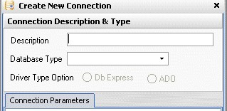

Connection Description and Type
The Connection Description and Type section is on the top half of the dialog.
- Enter a suitable Description for the connection. This is what appears in the list of connections displayed in the Select Connection dialog and the Quick Connect menu.
- Select the Database Type from the drop down list.
- Select the type of Driver you want to use with this connection.
DbSee can use either the in-built Db Express drivers or the Microsoft's ADO (OLEDB) Drivers to connect to a Database.
- DbSee has in-built Db Express drivers for Interbase, MSSQL, Oracle, DB2, Informix and MySQL Databases. These are 6 years old so may not work well with the latest versions of these databases.
 Full meta data extraction required for Auto Group/Filter/Sort features are implemented only for Interbase and MSSQL databases when Db Express drivers are used.
Full meta data extraction required for Auto Group/Filter/Sort features are implemented only for Interbase and MSSQL databases when Db Express drivers are used.
- The ADO (OLEDB) drivers are not supplied with DbSee. MS Windows usually comes with OLEDB Providers for MSSQL and Access databases and you may have other 3rd party OLEDB Providers installed on your computers. Note that ADO.NET Drivers cannot be used by DbSee.
 Full meta data extraction required for Auto Group/Filter/Sort features has been tested OK with MSSQL and Access OLEDB Providers. With the other databases whether full meta data extraction may work depending on how well the Information Schema features implemented by the driver.
Full meta data extraction required for Auto Group/Filter/Sort features has been tested OK with MSSQL and Access OLEDB Providers. With the other databases whether full meta data extraction may work depending on how well the Information Schema features implemented by the driver.
 The recommended strategy for selecting a driver is:
The recommended strategy for selecting a driver is:
- For Interbase choose Db Express driver as there is no ADO Choice.
- For MSSQL try both, and use the one that gives best performance.
- For Access use ADO.
- For other databases if you have a 3rd party OLEDB Provider try that first else use Db Express.
 DbSee does not check if the OLEDB Provider you use is really installed in your computer. If it is not installed it will raise an error when you attempt to connect to the database.
DbSee does not check if the OLEDB Provider you use is really installed in your computer. If it is not installed it will raise an error when you attempt to connect to the database.
Created with the Freeware Edition of HelpNDoc: Single source CHM, PDF, DOC and HTML Help creation